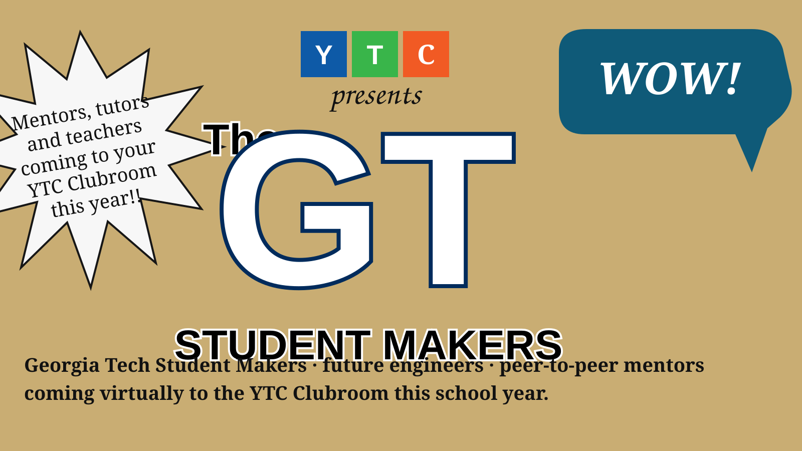

Students serve Evanston.
Community technology, younger-student teaching, Camp Kuumba, and the developing Foster School relationship turn the club outward.
Community → ETHS
ETHSA student-run YTC chapter at ETHS, connected to Evanston and a wider teaching network.

STUDENT-LED AT ETHS · CONNECTED TO A MUCH BIGGER WORLD
At ETHS, students learn engineering, teach what they know, serve their community, and discover that a skill learned after school can matter far beyond the clubroom.
WHAT THE MODEL LOOKS LIKE

Technology is the medium: computers, fabrication, robotics, coding, troubleshooting.

Learning becomes responsibility when another person is waiting for you to explain what you know.

That is where technical confidence starts turning into leadership.
COMING INTO THE CLUBROOM
Future engineers from Student Makers at Georgia Tech will teach STEM courses virtually into the ETHS YTC Clubroom this school year.

University students teaching high-school students is one side of the YTC model. The opportunities for ETHS students to learn, teach, and join developing community programs live on the Student page.
Student opportunities →THE CLUB HAS GENERATIONS
“It's like the club has generations. Leaders change, but the idea stays.”
— Furqaan · ETHS
Read student stories →
FROM EVANSTON OUTWARD
The same teaching model works close to home and across distance. The point is not a list of places. The point is what happens to an ETHS student when someone else is depending on what they know.
Community technology, younger-student teaching, Camp Kuumba, and the developing Foster School relationship turn the club outward.
Community →University partners, virtual teaching, and relationships across YTC's wider network show students that their skills can travel.
Global experience →SUPPORT THE CLUB
Support puts tools on the bench, helps students teach in the community, and opens the next leadership experience.